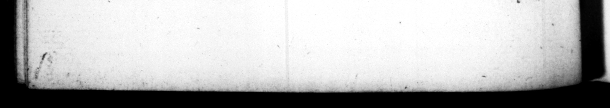

24s - 'C $BET. TRANQ quod non laguneo, ffrangulatam in Gemonias abjecerit : ue tali clementia interpon decretum paſſus eſt. got Abi gratiæ agerentur, & Capitolino Jovi donum ex au10 facrareiur. 54. Cum ex Germanico tres nepotes, Neronem & Druſum & Caium, ex Druſo unum Tiberium baberet, deſtitutus morte liberqrum, maximos naru de Germanici fliis, Neronem & Druſym P. C. tom mendavit: diemquè 3 rizocinii, cengiayo plebj dato, cliebravit. Bed it comperit,” jneunre ange, pro: eum quo: que ſalute piblice. vota ſuſcepra : egit cum ſenatu, Nor devere tale, ee a expert is & tete prove irs atque ex eo, Pate fact interiore zuimi ſu1_nota, qraaj um criminationibus obngxi2s reddiflir : variaqye. fraude. pings. ye. & concitaxcntur % aVitla, & concitati perilereng\cy cen ſavit per literaz, Aua S. congeſtis etiam prbhrię, & ü. dicaios hoſtes fame. qegiytt © Neronem in inſula ont Druſum in ima parte Palatii, Putant Neronem ad voluncriam mortem coactum, cum ei carnifex quaſi ex ſenarus' auctoritate miſſos laqueos & nncos oſtentaret. Druſo autem adeo alimenta ſubducta, ut tomentum è culcita tentaverit mandere: amboum fic relioque colligi poſſent. Druſus, they tel you, was ſq day the number of n the X Hen fe Fer it as 4 favour, that he had not thrown her body upon the Scalg, Gemonie. and ſuffered a vote of the houſe to paſs, to thank him for his clemency, and a pre, ſent in gold to be made to Jupiter Ca, pitolinu upon it. | 54. He had by Germanicus three us one named Tiberius of which, after the It his ſons, he recommended Nero and Druſus to the ſenate : and ubm the days of their being Jolenmly intreduced into the forum, diftribured mney among ihe people. Bur when be found, that vows had been offered wp by | the magiſtrates in the _— of the yen, for their health, bold the "ſe nate, that ſuch honours ought not to be canferred but upon ſuch, as had been tried, and were — in age. Having thus betrayed ſecret /[pefition of his ſoul towards them, he occaſioned their being perſe with a variety of informations ag ain them; uſed divers arts 70 them ; | | 25 . them, to rail at, and abuſe im, that be might thereby be fur. 7755 , With. a pretence, to deſtroy them, e charged them with it in a luier to foe, ſenate, and at the, ſame time, * th great bitterneſs accuſed them of the moſt ſcandalous wices, wan their being declared enemys by the ſenate, ſiarved them both 10 death, Nero in the iſland of: Pontis, and Druſus in the lower part of the Palatium, It is believed by ſome, that INN ro was put upon making away with himſelf, by the executioner, ſhewing him halters and hook, as if ſent to bim by the order of the ſenate, pined, that he atrempted to eat the ſtuffing of his bed. And the relicks of them both were ſo diſperſed, that it was with much ado they they were 55. Super veteres amicos ac familiares, viginti ſibi & numero principum civitatis depoſcerat, velut conſil iarios in negotiis publicis, Horum omnium vix duos aut tres inculumes præſtitit : cæteros, zlium alia de cauſa perculit. brought together agam. 55. Beſides his old F, and inti mate acquaintance, he defired twenty of the moſt eminent perſons in the city, to adviſe with upon the twblick aff airs. Out of all this number, ſcarce % or three eſcaped him; all the refs he defiroyed, upon one pretence or and. ther, and amongſt them Ælius Sejanus , = Inter
